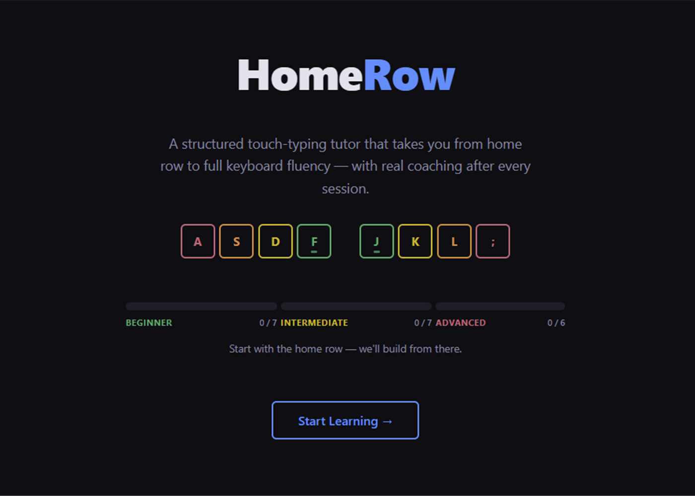
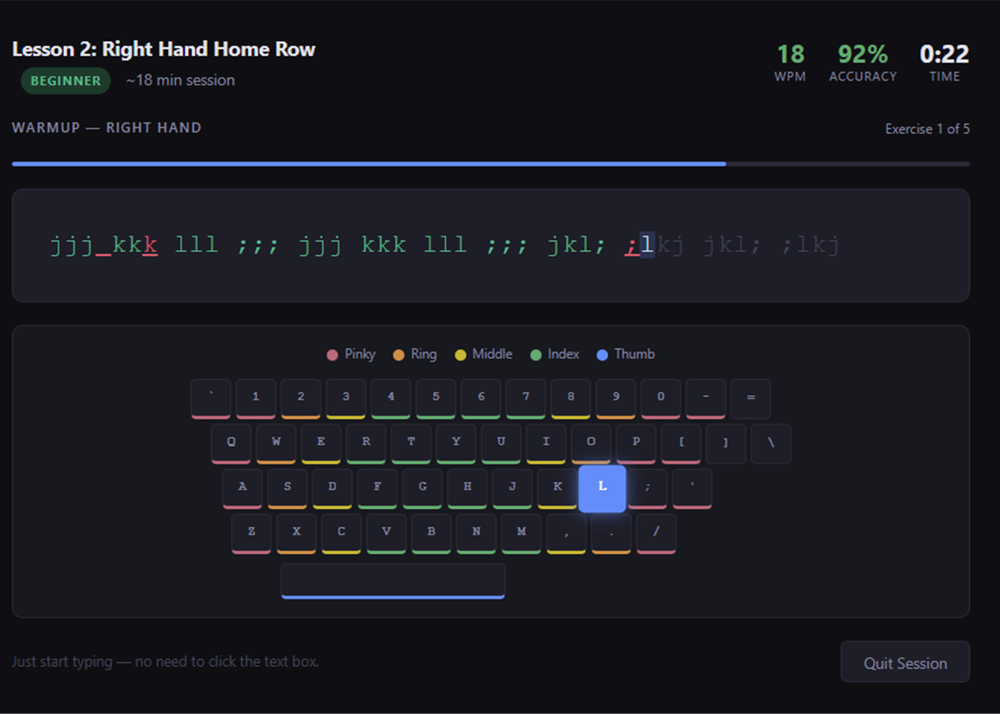
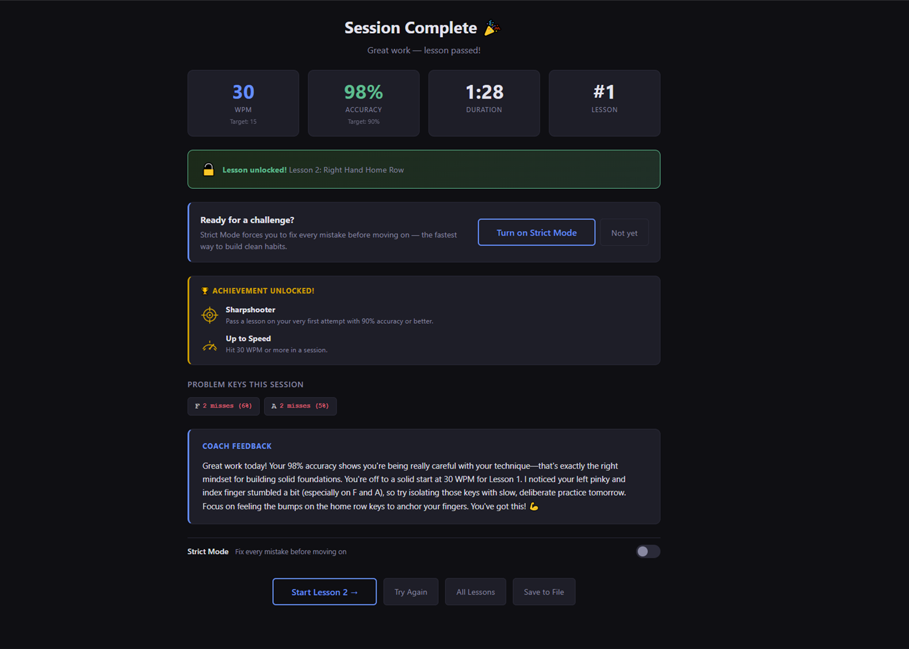
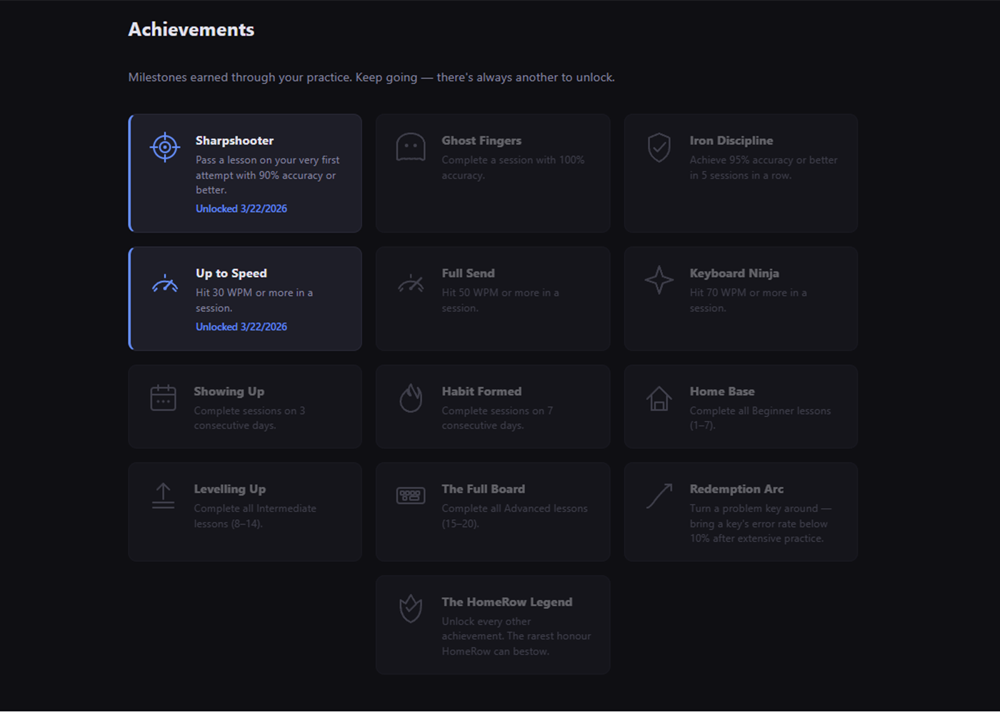

Web app
HomeRow — Touch Typing Tutor
A personal project — built to stretch my development skills and to give myself a tool I actually wanted to use. HomeRow offers progressive lessons from home row through to full keyboard, with real-time accuracy and speed tracking in a clean, distraction-free interface. Desktop only — it's a typing app, so a keyboard is required. Developed with the assistance of Claude Code.